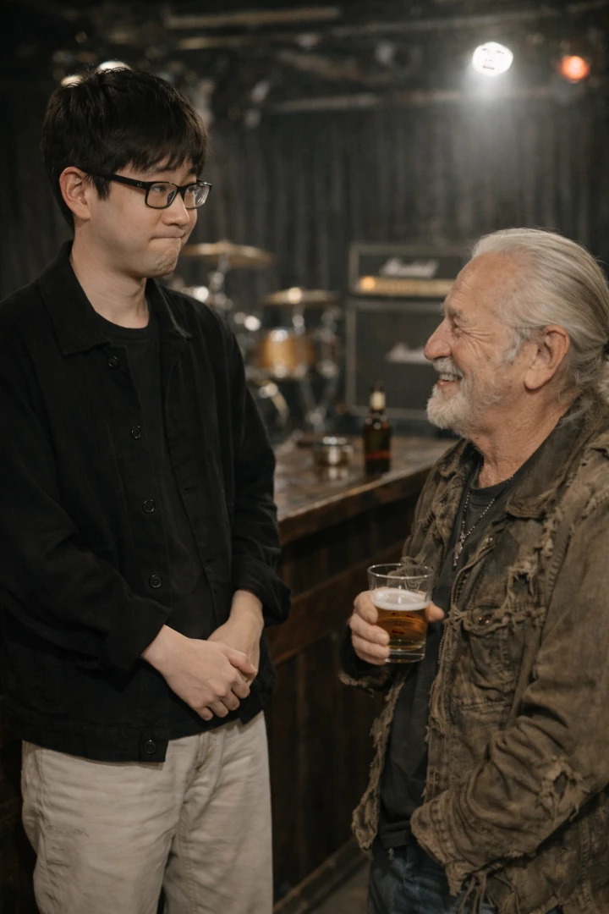

[with audio] #121
【音声配信】👴👵 対話とふれあい（無意識と罪悪感）️🛌❤️🩹【第27回】
テーマ: 🙋♂️一緒にお話しましょう！🙋♀️，📛 幼児期の無意識について質的に検討します（🍑桃太郎と✏️色鉛筆と🩹骨折と👫手繋ぎと．），🌃久しい夜の街にて🎸 etc…｜
時間: 約 60 分｜
料金: 無償（サイト共通）
メニュー
【画像】紹介文

ジャルジィ・ド・リマージュ（ホモ・サピエンスに妬かれて）
生成AI（ChatGPT）にプロンプトを入力し出力させた，今回のトークに関連する画像を掲載してしまいます！（※一部の画像は拡大要注意です！）

テクスト・ザ・ジェラシアス（最適化に魅せられて）
今回も生成AIによる整った紹介文を掲載してしまいます！（やっぱし嫉妬しちゃいそうです！）
「なぜあの記憶が，行動に影響を及ぼすのか」
Chat GPT
「なぜあの瞬間だけ，妙に鮮明なのか」
そんな問いを，どこか笑いを交えながら検討します．
🌀 カオスも，理論も，ちゃんと両立
人はなぜ 承認 を求めるのか？
——私たちは結局，ソーシャルアニマルズ．
思考には余裕が必要．
山と海と，おいしいお茶があれば，わりと解決する説．
🌃 久々に歩く夜の街
そして——
「覚えてくれている人がいた」
なんとも言えない嬉しさ．
過去と現在が，ふっと接続される瞬間．
🤝 そして，いまの現在地
この配信は，完成された答えを示すためのものではありません．
寧ろ，
「これからも対話をしていきたい」
という，話者の率直な希望そのもの．
関係のネットワークの中で，
忘れられたり，覚えてもらえていたりしながら，
それでもまた言葉を交わしたい．
女の子との思い出も，
承認の渇望も，
ちょっとしたギャグの暴走も，
すべて含めて「いまここ」の声．
🌙 こんな夜に——
◆ 幼児期の記憶が妙に気になる！
◆ 無意識という言葉に，少しだけ惹かれる！
◆ そして，誰かとちゃんと話してみたい！
——そんなあなたへ．
心の考察と，フェロモン漂うカオスと，
ささやかな再会のよろこび．
どうぞ，システィ・ムードの余韻とともにお楽しみください．
さすがに，ちょっと恥ずかしくなりますよね（AIイっちゃってる説！^ ^）笑
主な内容リスト
筆者直々の生々しいリストを表示
【第27回】全 10 項
- [Part.a] イップス・オープニングとは何か（私は非常にイップスではない）
- 対話の現在状況と目標
- ソーシャルアニマルズによる「承認の要請」
- 関係のネットワーク
- 回想：ライブハウスに単身で乗り込んだ17の昼
- コミュニケーションの有意義性
- 思考には余裕が必要
- 山と海，おいしいお茶
- [Part.b] 女の子との思い出／無意識への影響（サブテーマ）
- チャンネル登録お願いします！（？？？）
ファイル
▶ Part.a (1/2): "【音声配信】👴👵 対話とふれあい（無意識と罪悪感）️🛌❤️🩹【第27回】Part.a" Talk Audio（Date of website launch: Feb 19, 2026.）
▶ Part.b (2/2): "【音声配信】👴👵 対話とふれあい（無意識と罪悪感）️🛌❤️🩹【第27回】Part.b" Talk Audio（Date of website launch: none.）
音源: 320kbps mp3（高音質）; 参照先: Google Drive オンラインストレージ
ファイル及びデータについての詳細表示
録音者情報: "Sys. T. Miyatake (Date of recording: Feb 19, 2026.)"
ファイルに関する説明とお願い:
Google LLC https://www.google.com/ のクラウドストレージサービス，Google Drive に保存されているファイルを参照しています．
サイトにお越しの皆さまに鑑賞いただくことを目的として，誰でも再生可能な状態に設定してあります．
当サイト利用者さまがオンラインサーバ上でファイルを再生してお楽しみいただく以外の，たとえばローカルへの保存などの行為はお控えくださいますよう，お願い申し上げます．
ドライブにアップロードする理由:
ファイルサイズが大きいため．
リスナーのみなさんへ
この番組では，フィードバックをお待ちしております！
貴重なご意見・ご感想・ご希望などをお聴かせくださると，ありがたいのです！ご協力いただける方は是非 筆者宛にご連絡 お願いいたします...！
以上になります．今回もご清聴ありがとうございました！
[ Sys. T. Miyatake, (Feb 19, 2026. Last modified: none;) ]